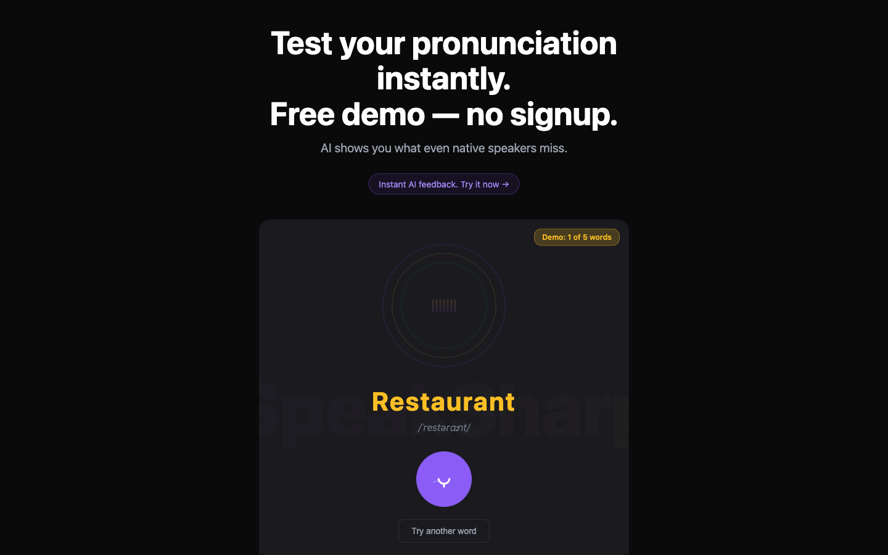
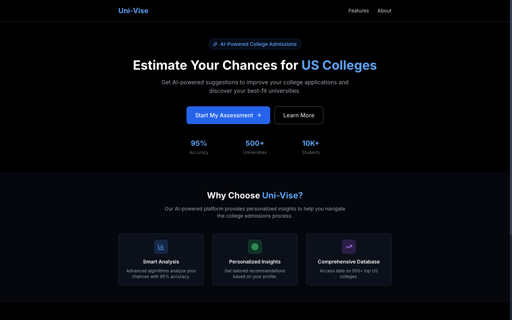

2026 · Two products
Learning Tools
Two education products that share a problem: the visitor won't believe the claim until they've used the thing. Both solve it the same way — by putting a working piece of the product directly in the landing page.

SpeakSharp: try it before the ask
- The headline is the offer. "Free demo — no signup." Two lines of promise, both about removing friction rather than describing features.
- A working recorder above the fold. A word, its IPA transcription, and a record button — the whole product loop, playable immediately.
- The limit is visible. "Demo: 1 of 5 words" in an amber pill. Stating the cap up front is more honest than hitting a wall at word six.
- Yellow for the target word, violet for the action. Two accents on near-black, so the eye goes word-then-button in the right order.
- Ghosted wordmark behind the card. Branding without spending any of the fold on a logo.

Uni-Vise: one number people want
- The verb is "estimate," not "explore." Applicants want a probability. The headline promises exactly that and nothing broader.
- Three metrics as the credibility line. 95% accuracy, 500+ universities, 10K+ students — placed immediately under the button, where the doubt is.
- Blue as the only accent on black. Highlighted words, the primary button and the metric numbers; the feature-card icons get muted tints so they never compete.
- Cards for capability, not decoration. Three equal cards under the fold, each one sentence long.
Concept and early-stage builds. The accuracy and volume figures shown are placeholders, not measured results from an operating service.